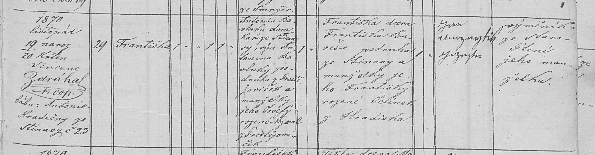

Text z matriky a překlad
Přepis originálu
[Geburtsbuch Stinava, pag. 375] [Zeit der Geburt und Taufe] 1870 listopad 19 naroz., 20 křtěn – Vincenc Zdráhal, koop.; bába: Antonie Hradečný ze Stínavy č. 23 [Haus-Nro.] 29 [Täufling] Františka [kath., weiblich, ehelich] 1 · 1 · 1 [Vater] Antonín Bavlnka, domkař ze Stínavy, syn Antonína Bavlnky, podruha z Prostějoviček, a manželky jeho Josefy rozené Nezval z Prostějoviček [Mutter] Františka, dcera Františka Bureše, podruha ze Stínavy, a manželky jeho Františky rozené Jelínek z Hradiska [Pathen] Jan … (?), Josefa (?) – výměník ze Staro-Ptení, jeho manželka
Překlad
Františka se narodila 19. listopadu 1870 ve Stínavě v domě čp. 29 a 20. listopadu byla pokřtěna (farnost Ptení). Otec Antonín Bavlnka byl domkář ve Stínavě; jeho rodiče byli Antonín Bavlnka, podruh z Prostějoviček, a Josefa rozená Nezvalová z Prostějoviček. Matka Františka byla dcerou Františka Bureše, podruha ze Stínavy, a Františky rozené Jelínkové z Hradiska. Kmotry byli manželé, výměnkáři ze Starého Ptení (jméno kmotra nečitelné). Pozn.: v roce 1892 bydlela rodina v čp. 36.